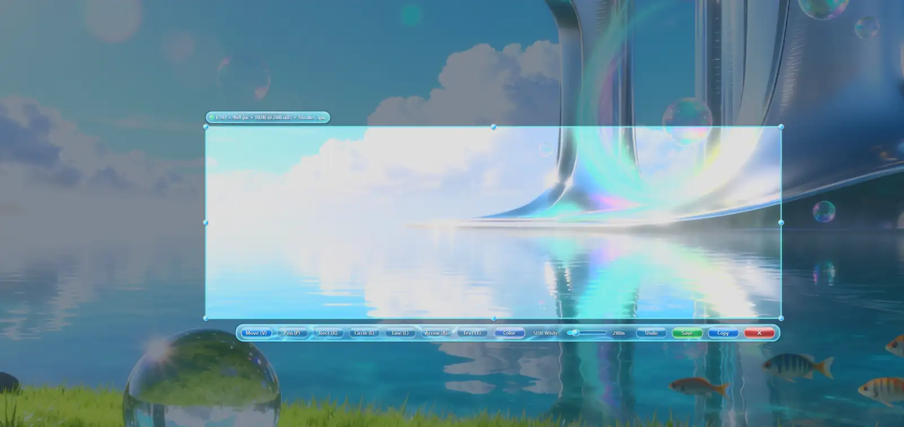
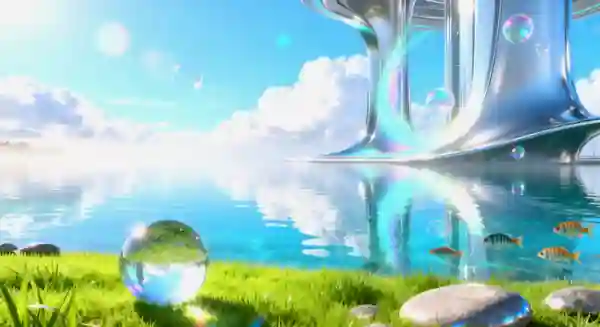

Keep the sky. Keep the shadows.
Capture through a floating-point scRGB pipeline, then tone-map to a shareable SDR PNG. Preserve the scene instead of bleaching its highlights.
Keep the detail.
HDR-aware screenshots without washed-out skies. Draw on them, pin them above your windows, find them in History, or pull out text offline. All wrapped in glorious liquid-glass Aqua.
64-bit Windows · MIT licensed · No Python required · Offline by design

Capture what you meant to capture, then do more with it. Prismwake v0.2.0 brings pins, offline text extraction and searchable History to its HDR-aware editor.
Capture through a floating-point scRGB pipeline, then tone-map to a shareable SDR PNG. Preserve the scene instead of bleaching its highlights.
Draw, blur, pixelate or add arrows and text. Keep references floating above other windows with resizable, adjustable-opacity pins.
Browse a local screenshot History, search saved captures and recognized text, and extract words with on-device OCR. No cloud upload.
Explore the annotation playground, compare highlight treatments, preview liquid-glass themes, and follow real releases from GitHub. Everything here responds to you.
Drag the divider to preview how clipped highlights can change a capture. This is a visual simulation, not a measured comparison.
Illustrative overexposure effect only, not a measured HDR-versus-SDR comparison.
Drag a region, draw a closed shape, and use the Paint Bucket to fill the area inside your lines. The background photo is never used for fill detection.

Drag to choose a capture regionAll edits stay inside your selection. Paint Bucket fills only closed regions formed by your own drawings, ignoring the background image entirely. Undo is supported.
Preview an interface palette, adjust glass opacity, and select a small animation level. These four palettes are available in Prismwake. The controls below preview the look; they do not change your desktop settings.
Capture the light. Shape the moment.
Preview-only controls here. Choose your preferred Aqua theme in the desktop app's Settings.
Published releases are loaded directly from GitHub when this card comes into view. The ideas beneath are possibilities, not promises.
Verified release shown; live list will load on view.
Prismwake v0.2.0 is here, with floating screenshots, offline text capture, searchable History, smart capture modes and the Aqua annotation tools you already know.
It uses HDR-aware DXGI capture and converts the captured data into tone-mapped SDR PNGs. True HDR file export is a future idea, not a current feature.
Yes. It is MIT licensed and free. The GitHub repository contains the current Python application source, test suite and historical releases.
Download the new Prismwake.exe. v0.2.0 no longer includes a separate HDRSnipFusion.exe alias. For older installations, install the new named executable directly rather than relying on the legacy filename to update automatically.
No. The mini editor is a local interactive prototype. Its Paint Bucket fills regions enclosed by your drawings and ignores the background photograph. The comparison viewer uses an illustrative exposure filter, not a real HDR measurement. No screen capture or image upload is involved.
It captures before opening the editor overlay. Borderless fullscreen tends to be more reliable; exclusive fullscreen can still minimize or behave differently depending on drivers and game settings.